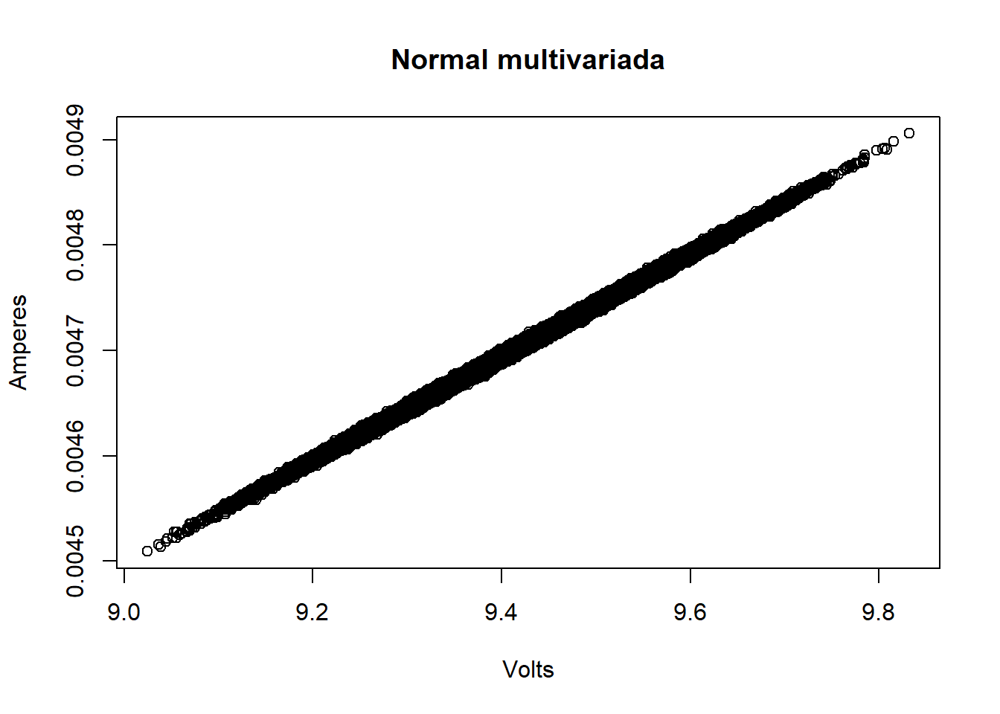
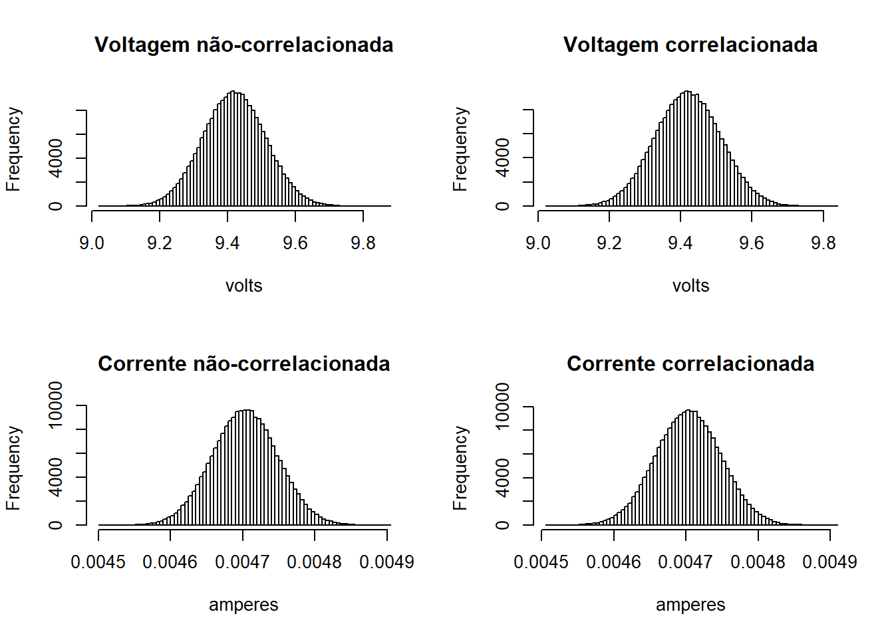
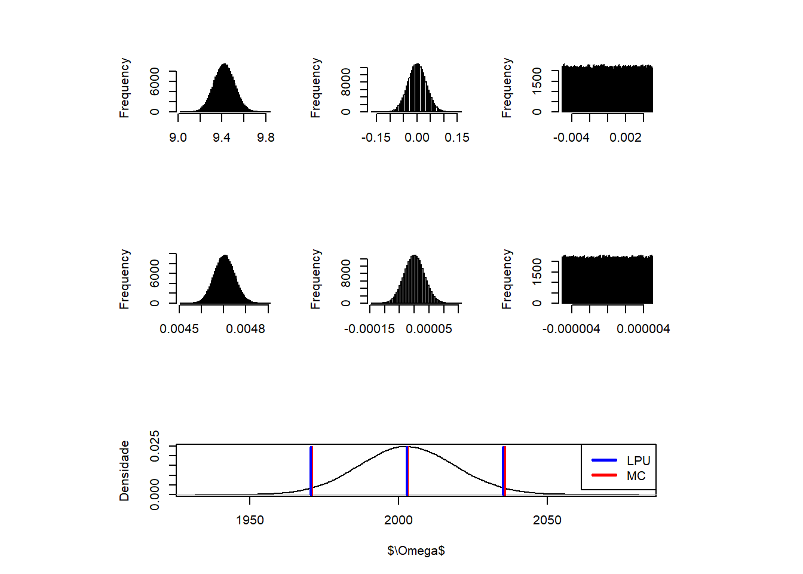

Exemplo de solução pelos método LPU e MC (não correlacionadas e correlacionadas):
Modelo Matemático:
- \(R=\frac{(Va+Vbg+Vbu)}{(Ia+Ibg+Ibu)}\)
| \(Va\) |
A |
Normal |
Amostrado |
| \(Vbg\) |
B |
Normal |
±(0.5%+2D) |
| \(Vbu\) |
B |
Uniforme |
Display de 3 1/2 |
| \(Ia\) |
A |
Normal |
Amostrado |
| \(Ibg\) |
B |
Normal |
±(0.8%+3D) |
| \(Ibu\) |
B |
Uniforme |
Display de 3 1/2 |
val_v <- c(9.28, 9.00, 9.51, 9.01, 9.06, 9.95, 9.09, 9.29, 9.88, 9.12, 9.18, 9.44, 9.91, 9.85, 9.73) #Volts
val_i <- c(4.64, 4.50, 4.75, 4.49, 4.53, 4.97, 4.55, 4.64, 4.93, 4.54, 4.59, 4.72, 4.93, 4.91, 4.86)/1e3 #Amperes
#Cálculo sem considerar Correlação
r <- plot_GUM(lpu, mcs)

kable(r[2], digits=6, caption = "Law of propagation of uncertainty (LPU)")
Law of propagation of uncertainty (LPU)
| \(v_a\) |
9.420000 |
0.092304 |
1.000000 |
0.092304 |
212.615167 |
19.625198 |
14 |
| \(v_c\) |
0.000000 |
0.067100 |
2.000000 |
0.033550 |
212.615167 |
7.133239 |
Inf |
| \(v_r\) |
0.000000 |
0.005000 |
1.732051 |
0.002887 |
212.615167 |
0.613767 |
Inf |
| \(i_a\) |
0.004703 |
0.000045 |
1.000000 |
0.000045 |
-425833.069218 |
-19.303538 |
14 |
| \(i_c\) |
0.000000 |
0.000068 |
2.000000 |
0.000034 |
-425833.069218 |
-14.398836 |
Inf |
| \(i_r\) |
0.000000 |
0.000005 |
1.732051 |
0.000003 |
-425833.069218 |
-1.229274 |
Inf |
| \(u_c(y)\) |
2002.834869 |
NA |
NA |
NA |
NA |
31.904112 |
50 |
| \(U_{exp}(y)\) |
NA |
NA |
NA |
NA |
2.051251 |
65.443334 |
NA |
|
kable(r[3], caption = "Monte Carlo simulation (MCS)")
Monte Carlo simulation (MCS)
| \(\bar{MC}\) |
2003.24571116757 |
| \(\bar{MC}\)-LEP |
63.0139099676053 |
| \(\bar{MC}\)-HEP |
-64.4775974112306 |
| LowEndPoint |
1940.23180119996 |
| HighEndPoint |
2067.7233085788 |
| \(\delta_1\) |
5 |
| \(\delta_2\) |
0.5 |
| \(D_{high}\) |
0.554894266256724 |
| \(D_{low}\) |
2.84026627039202 |
| p-value (ST) |
0.287778099858137 |
| 1 Algarismo Significativo |
TRUE |
| 2 Algarismos Significativos |
FALSE |
| RM |
2000 \(\pm\) 70 \(\Omega\) |
|
kable(res)
| \(r(v,i)\) |
0.998985 |
| \(U_c(y)\) |
16.154563 |
| \(t_{stdudent}\) |
2.000000 |
| \(U_{exp}(y)\) |
32.309126 |
kable(df)
| RM = 2.003 \(\pm\) 0.032 \(k\Omega\) com 95.45% de confiança |
RM = 2.00 \(\pm\) 0.03 \(k\Omega\) com 95.45% de confiança |
par(mfrow=c(1,1))
plot(m_v+xi[1,], m_i+xi[2,], main ="Normal multivariada", xlab = "Volts", ylab = "Amperes")

par(mfrow=c(2,2))
hist(mcs$mc[1,], 100, main="Voltagem não-correlacionada", xlab = "volts")
hist(m_v+xi[1,], 100, main="Voltagem correlacionada", xlab = "volts")
hist(mcs$mc[4,], 100, main="Corrente não-correlacionada", xlab = "amperes")
hist(m_i+xi[2,], 100, main="Corrente correlacionada", xlab = "amperes")

#Cálculo considerando a correlação
r <- plot_GUM(lpu, mcs, r2=rvi, tstd=2)

kable(r[3], caption = "Monte Carlo simulation (MCS)")
Monte Carlo simulation (MCS)
| \(\bar{MC}\) |
2002.9957421325 |
| \(\bar{MC}\)-LEP |
31.9861190195973 |
| \(\bar{MC}\)-HEP |
-32.660768004316 |
| LowEndPoint |
1971.0096231129 |
| HighEndPoint |
2035.65651013681 |
| \(\delta_1\) |
5 |
| \(\delta_2\) |
0.5 |
| \(D_{high}\) |
0.512515379370825 |
| \(D_{low}\) |
0.483880095709765 |
| p-value (ST) |
0.0117368425684734 |
| 1 Algarismo Significativo |
TRUE |
| 2 Algarismos Significativos |
FALSE |
| RM |
2000 \(\pm\) 30 \(\Omega\) |
|
Copyright © 2017 Guilherme Kunz, Inc. All rights reserved.